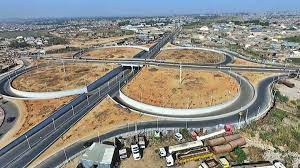

Kano State (Hausa: Jihar Kano) is one of the 36 states of Nigeria, located in the northern region of the country. As of the most recent national census (2006), Kano State is the most populous in Nigeria. The recent official estimates taken in 2016 by the National Bureau of Statistics found that Kano State was still the largest state by population in Nigeria. Created in 1967 from the former Northern Region, Kano State borders Katsina State to the northwest, Jigawa State to the northeast, Bauchi State to the southeast, and Kaduna State to the southwest. The state's capital and largest city is the city of Kano, the second most populous city in Nigeria after Lagos.
